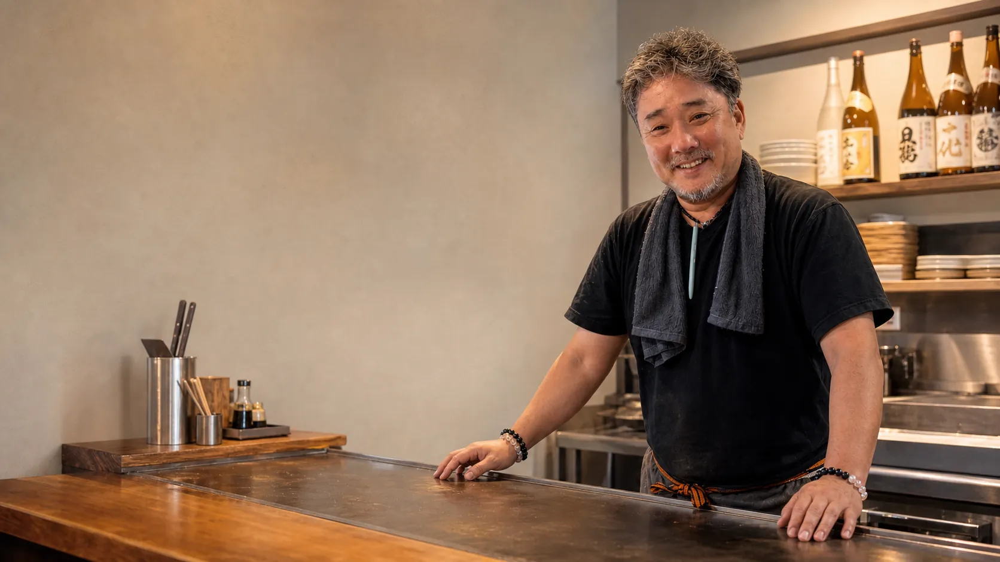
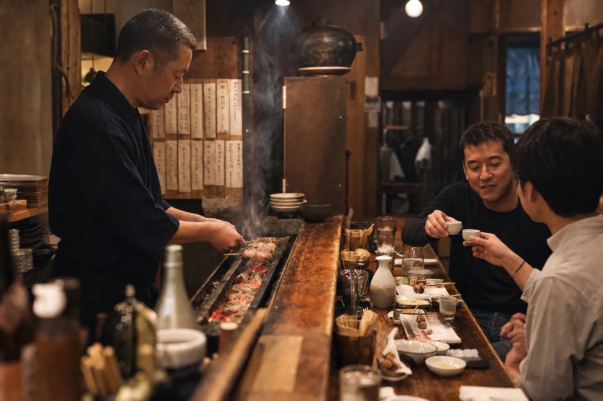
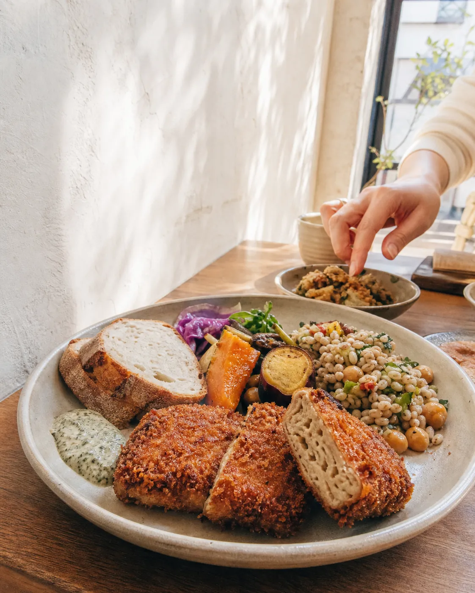

現場を知る書き手
飲食業界歴25年以上。数字だけでは見えない、お客様と店側の両方の温度から書きます。
FOOD-FOCUSED WEB WRITING & LP DESIGN
飲食業界歴25年以上・最大35店舗を統括した現場目線で、
「お客様が来店を決める理由」からLPと文章をつくります。

Client work15席の小ささを、常連感に変える。初来店の不安を先に消す導線設計。
LPを見る ↗
Concept work焼き台の熱と手仕事から、予約したくなる夜を設計。
LPを見る ↗
Concept work健康訴求より先に、食べたい気持ちと滞在時間を伝える。
LPを見る ↗既存ブランドを守りながら、新しい一杯を自然に追加。
LPを見る ↗Client workは実店舗からご依頼を頂き、制作を進めている案件です（沼ちゃんとこ案件は納品前のため、掲載内容は変更となる場合があります）。Concept workは構成・コピー・デザインを提示する試作です。試作の写真は方向確認用で、公開時は実店舗撮影への差し替えを前提とします。
レジのCSVを取り込むだけで、原価率・人件費率・前年比までグラフになります。25年の現場で見てきた「知りたい数字」から逆算して設計しました。
日々の仕入れを記録すると、合計と平均が自動で出ます。Excelでそのまま開けるCSVに書き出せます。
触って試せます ↗ LIVE DEMO15問の回答から16タイプに分類します。飲食で働く人のために、質問から結果の文章まで設計しました。
触って試せます ↗ LIVE DEMO現在地から次の地点までの距離を測り、1打ずつ記録します。地図はブラウザ上で動きます。
触って試せます ↗いずれも自社開発ツールです（デモはサンプルデータ／実店舗データは含みません）。サーバーを使わない構成が中心で、月額の維持費を抑えて運用できます。業務ツールの受託制作も承ります。
飲食業界歴25年以上。数字だけでは見えない、お客様と店側の両方の温度から書きます。
写真映えだけで終わらせず、予約・来店・登録までの心理の順番を組みます。
制作速度は上げても、食材・言葉・ブランドの違和感は人の目で削ります。
佐藤 明宏｜OOKINI.com 代表
飲食業界歴25年以上。「牛角」「かつや」「まいどおおきに食堂」などの出店・立地診断を責任者として担当後、ゴーストレストラン業態で西日本最大35店舗を統括するエリアマネージャーを経験。出店から数値管理まで知る立場で、「おいしい」だけでは伝わらない——そんな店舗にとって最適な言葉と画面を組み立てます。
NOTE連載「飲食現場25年の道具箱」
飲食店のLP・記事・業務ツールのご相談。まずはDMからお気軽にどうぞ。